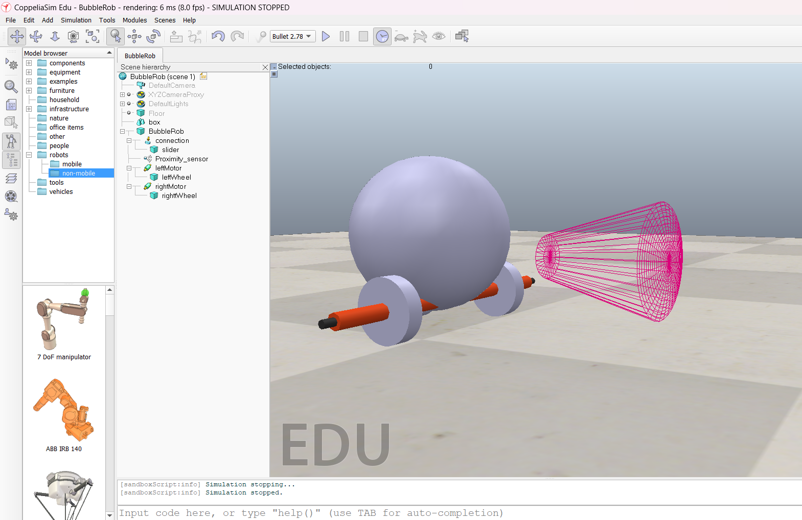
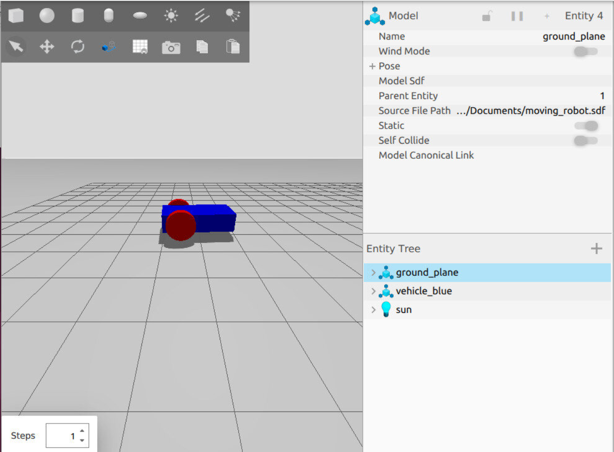
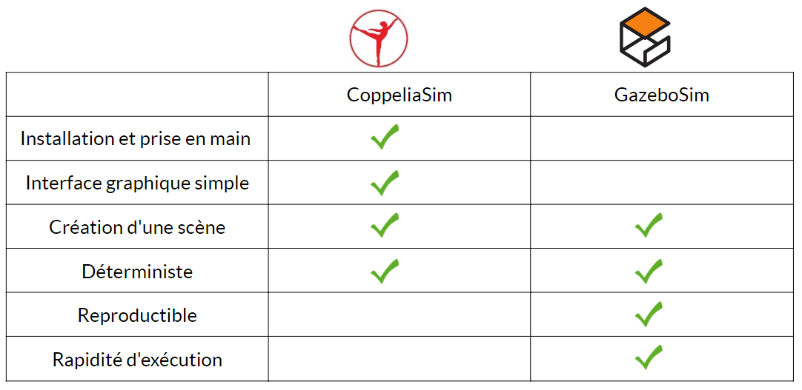
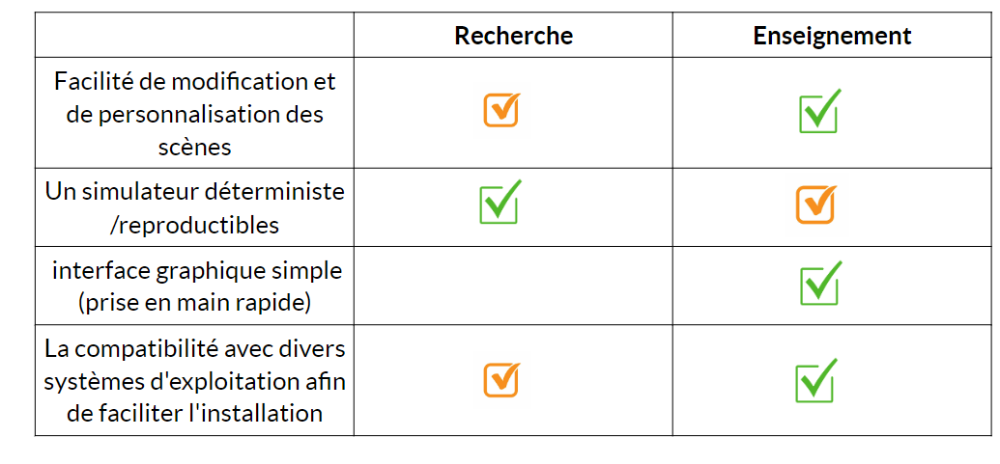
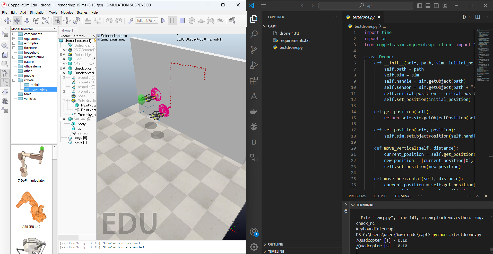
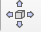

Introduction
Dans le cadre des travaux de recherche menés au LDR sur les plateformes embarquées, les chercheurs souhaitent mettre en place des environnements de développements et de tests plus récents et robustes pour 2 applications en particulier, dans l’ordre d’importance :
La programmation embarquée, en particulier avec OS Temps Réel. Mettre en place un environnement de dev/tests avec sondes logicielles pour le temps réel. Pour réaliser des tests de systèmes contraints, possiblement utilisant des architectures matérielles diverses (ARM, RISC-V, etc.), les chercheurs ont besoin d’un environnement clair, générant des traces analysables (quantité de mémoire utilisée, temps passé sur le processeur et lors des accès aux périphériques, décisions d’ordonnancement, etc.).
Simulateur pour robotique/drone. Mettre en place un environnement de dev/tests avec, par exemple CoppeliaSim et Python/ROS, génération de scénario et récupération des données de vol et de l’environnement simulé.
Différents travaux sont réalisés depuis plusieurs années avec l’ONERA sur des simulations utilisant de drones. Ces travaux utilisent d’anciens simulateurs difficiles à maintenir aujourd’hui, ce qui rend complexe la reproduction de certains résultats. Plusieurs exemples existent pour des applications spécifiques, comme avec le robot Poppy et ROS.
On va s’intéresser que sur la partie simulation pour la suite de cette documentation, concernant la documentation de la partie embarqué, elle est disponible sur un autre dossier nommé LDR_ZephyrOS
Simulation
La simulation c’est la création d’un modèle virtuel d’une machine, tout en prenant en considération l’environnement de travail et tous les autres facteurs influents. Ça nous permet de savoir si la conception peut fonctionner après la fabrication. Ça nous permet de tester différentes machines/algorithmes dans un même environnement (plusieurs drones dans un parc urbain et voir comment chaque drone navigue entre les arbres et réagit aux obstacles), et de tester une machine dans différents environnements (simuler un seul modèle de drone au-dessus d’une forêt avec des vents variables, dans un désert avec des températures élevées ou à l’intérieur de la maison).
Pour la suite du projet, on va se concentrer sur deux simulateurs qui sont CoppeliaSim et GazeboSim, ils sont tous les deux des simulateurs dynamiques de la robotique mais avec des caractéristiques distinctes.
L’image suivante est l’interface graphique de CoppeliaSim

L’image suivante est l’interface graphique de GazeboSim

Après avoir tester les deux simulateurs, j’ai pu restituer les avantages et inconvenients de chacun, l’objectif de cette comparaison est de déterminer le simulateur le plus adapté à nos besoins (coté recherche et coté enseignements)
La restitution des avantages/inconvénients
Le simulateur CoppeliaSim
Avantages |
Inconvénients |
|---|---|
L’installation est simple et rapide |
L’exécution n’est pas possible via le |
La création des scènes est simple, |
un facteur de temps réel n’est pas très |
Interface graphique conviviale et |
|
CoppeliaSim n’est pas déterministe |
Le simulateur GazeboSim
Avantages |
Inconvénients |
|---|---|
L’installation et la prise en main de |
L’installation sur Windows est complexe |
La création d’une scène est en XML |
Windows n’est pas une plateforme officiellement |
GazeboSim offre une personnalisation |
L’installation nécessite une version |
Un facteur de temps réel est beaucoup |
L’interface graphique de GazeboSim |
Une carte graphique Nvidia avec support |
Tableau récapitulatif de la comparaison

Les besoins pour la simulation
Un simulateur :
Qui a l’interface graphique de Coppeliasim pour qu’il soit facilement utilisé par les étudiants.
Qui exécute les scènes facilement, où on a pas besoin de jouer sur plusieurs plans pour lancer la simulation
Facile à installer sur windows de preférence (car sur linux certaines exécutions bug)
Deterministe et reproductible
Avec un facteur temps réel qui soit proche du temps réel

Après avoir tester les deux simulateurs et formalisé les besoins sur la simulation, j’ai choisi comme outil de simulation CoppeliaSim pour sa facilité et son efficacité ainsi que son optimalité
Drone Painting

Il faut savoir que dans CoppeliaSim, on peut prendre des objets directement sur l’interface graphique; pour mon cas, j’ai pris un drone ensuite je lui ai rajouté un proximité sensor, qui le cone large rose, j’ai également rajouté un painting nozzle qui est le cone un peu plus fin rose, donc une fois la scène est crée on va créer une connexion entre CoppeliaSim et Python grace à remoteApi qu’on rajoute dans les header, on peut donc dire que : à partir d’un code python simple on peut: modifier des scènes, faire déplacer des objets et récuperer des valeurs des capteurs.

Donc comme application réelle j’ai choisi de faire du Drone Painting, c’est une scène qui contient deux drones et faire en sorte qu’ils volent vers un mur et dessinent des points selon mes indications (ils peuvent former un rectangle par exemple)
Lancer la simulation en mode stepped pour avoir une simulation déterministe et reproductible (la simulation en mode stepped est plus lente mais c’est reproductible)
TIPS COPPELIASIM
Toujours enregistrer la scène avant de lancer la simulation sinon tous les objets que vous avez rajoutés ou toutes modifications apportées seront disparus
Toujours arrêter la simulation en cours avant de lancer une nouvelle simulation
Si vous avez ouvert plusieurs scènes à la fois, arrêtez la simulation de toutes les scènes avant de lancer une nouvelle simulation
Si vous voulez déplacer un objet avec la souris cliquez sur ça  , il y aura même une petite fenêtre qui va s’afficher pour modifier la valeur de x, y ou z si souhaité.